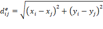
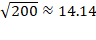

LSD Macro
Language – GIS Additions
|
Return values |
Return pointers |
Modify values/pointers |
Operate on structures |
Other elements |
|
|
|
|
||||
|
LSD GIS (Space) |
POSITION_X/Y |
|
|||
|
|
(R)SEARCH_POSITION/ *_XY/ *_GRID/ *_GRID_XY |
|
|||
|
|
|
||||
|
|
|
ADD_TO_SPACE_XY/ *_SHARE/ |
|
||
|
|
ADD_TO_SPACE_RND/ |
|
|||
|
|
COUNT_POSITION/ *_GRID |
|
|
||
|
|
|
(R/F)CYCLE_GIS |
|
||
|
|
|
|
(R/F/D)CYCLE_NEIGHBOUR |
|
|
|
|
|
|
|||
|
|
|
|
|
|
|
|
|
WRITE_LAT_GIS(val) |
INIT_LAT_GIS(…) |
|||
|
|
V_LAT_GIS_XY(…) |
|
|
||
|
|
|
|
|
SET_LAT_COLOR(val) |
|
|
|
|
|
|
SET_LAT_PRIORITY(val) |
|
|
|
|
|
|
|
|
|
|
|
|
|
|
|
|
|
|
|
|
|
MAKE_UNIQUE( "obj_Lab" )
This Macro declare the objects with label obj_Lab as unique objects with a unique ID. This change applies to all objects of the type obj_Lab in the model now and in the future. Its companion Macros, UID(…) and SEARCH_UID(…) allow to retrieve the ID of any unique object, or the object itself in a computationally efficient manner. Unique IDs are never assigned twice. In fact, it is possible to search for a deleted object via SEARCH_UID(…), in which case a NULL pointer is returned.
UID, UIDS( obj )
These Macros return the unique ID of the current Object p or the Object pointed by Object pointer obj. It is necessary that the object has
been declared unique before via MAKE_UNIQUE(…).
SEARCH_UID ( id )
This Macro searches for the
Object with the unique ID id. This
Object may already be deleted, in which case a NULL pointer is returned. See
also MAKE_UNIQUE(…).
LSD GIS
Besides the LSD specific Macros, modelers can use the several mathematical and statistical functions, as listed below. The functions marked with an asterisk (*) are only available when a C++11 or higher compiler is available (this is not the case of a Windows 32-bit LSD installation).
The Space is defined as a
two dimensional space  , i.e. ranging in the x direction
from 0 included to xn excluded and in the y direction from 0 included to yn
excluded. Three different distance metrics are implemented, see SET_GIS_DISTANCE_TYPE(…). Objects can have
any position inside this Space. It is useful to distinct Objects that represent
areas (usually GIS data) and objects that represent points (usually the Agents
inside the model). Objects that represent areas should be positioned on the Grid, i.e. having integer coordinates. This way they can easily
be accessed from other objects inside their area. Consider for example an
Object “Patch” placed at position (0,0). Its implicit area is the rectangle
defined by the coordinates (0,0), (0,1), (1,1) and (1,0), but excluding the
points (0,1),(1,1) and (1,0). These coordinates belong already to the next
patches. The following example shows a Grid with xn=3 and yn=4 and the
coordinates of the Patches.
, i.e. ranging in the x direction
from 0 included to xn excluded and in the y direction from 0 included to yn
excluded. Three different distance metrics are implemented, see SET_GIS_DISTANCE_TYPE(…). Objects can have
any position inside this Space. It is useful to distinct Objects that represent
areas (usually GIS data) and objects that represent points (usually the Agents
inside the model). Objects that represent areas should be positioned on the Grid, i.e. having integer coordinates. This way they can easily
be accessed from other objects inside their area. Consider for example an
Object “Patch” placed at position (0,0). Its implicit area is the rectangle
defined by the coordinates (0,0), (0,1), (1,1) and (1,0), but excluding the
points (0,1),(1,1) and (1,0). These coordinates belong already to the next
patches. The following example shows a Grid with xn=3 and yn=4 and the
coordinates of the Patches.
|
(0,3) |
(1,3) |
(2,3) |
|
(0,2) |
(1,2) |
(2,2) |
|
(0,1) |
(1,1) |
(1,2) |
|
(0,0) |
(0,1) |
(0,2) |
For example, if the object
“Agent” is at position (0.2,1.9) it is placed on the area defined by the
coordinates (0,1),(0,2),(1,1),(1,2). The object
“Patch” that represents this area has the coordinates (0,1). We may access it
from the “Agent” by using the Macro SEARCH_POSITION_GRID(“Patch”).
Sometimes, especially when
the Space represents non-geographical aspects (like technology, values, etc.)
it is useful to define it ‘wrapping’, i.e. borderless. For
this reason, special WRAP versions exist for all the initialization Macros. In
these Macros, a bit-code can be provided to connect the boarders as follows:
|
Bit-Position |
Associated Integer |
|
|
left |
1 () |
0=off, 1=on |
|
right |
2 () |
0=off, 2=on |
|
top |
3 () |
0=off, 4=on |
|
bottom |
4 () |
0=off, 8=on |
To define the wrap_code, select the according integer for each direction and
build the sum. For example to achieve a Space that wraps left and right, but not
top and down (a vertical cylinder), you would set the code equal to 3.
Complete wrapping is represented by the value 15, for example.See DISTANCE for the calculation of distances in a wrapping
world.
At a later point, we may
introduce a standardized way to load geo-tagged data to LSD models from
specially prepared input files. Visualization is currently possible by making
use of the regular LATTICE
commands but a
better integration to the GIS is on the agenda, too.
To create a Space there exist several options. If only a single Space
is wanted for the whole model (i.e., no online sensitivity analysis is planned) and no GRID is necessary, the INIT_SPACE_ROOT(…) is a good option. This option
initializes the Space with the root object, allowing accessing the Space via
the root object pointer in any situation. If some kind of “Patch”-object
exists, the INIT_SPACE_PATCH(…) Macro family is a good choice. It works similar to the INIT_NET family of
macros for the networks and fills the Space with objects, one for each point on
the grid. Finally, the INIT_SPACE_SINGLE(…) Macro family allows to initialize a Space with a single item and then,
using the various ADD_TO_SPACE(…) macros to add additional elements to the Space.
Whenever an object is deleted, it is automatically removed from Space.
Alternatively, the DELETE_FROM_SPACE(…) family of Macros allows to remove objects from a given Space without
deleting them.
The other macros allow to move objects in Space ( MOVE(…),TELEPORT(…)), get information on objects positions (POSITION(…)) or distance between objects (DISTANCE(…)), etc.
Most important, Macros exist to
search at specific positions (SEARCH_POSITION(…)) but also find nearest neighbours (NEAREST_IN_DISTANCE(…)) or cycle through all neighbours in a specific neighbourhood (CYCLE_NEIGHBOUR(…)). Based on the distance metric
optionally defined with the Macro SET_GIS_DISTANCE_TYPE(…) it is easy to represent von Neumann
(4, Manhattan distance of 1 ) or Moore (8, Chebyshev distance of 1)
neighbourhoods.
For many macros that conduct a
spatial search three version exist, starting with an R,
F or D. The ‘R’ implies that all elements in the set will be traversed in fully
random order. The ‘D’ implies that all items will be traversed by increasing
distance, randomised in case of equal distance. The ‘F’ implies a fast
traversing of all items without randomization.
See the overview for a complete list of the macros.
General patterns in the macros:
·
Macros
are by default self-centered, that is they act on the GIS to which the single
object is linked.
·
Alternatively,
one may use the “_WHERE” version to pass the pointer to another LSD object that
is also a gis-obj, indicating to operate on this object’s gis.
·
The
usual options “S” for “SEARCH” and “L” for “lagged”, etc, apply in the same
maner.
·
It
is useful to think of the “S” in terms of ‘who’
INIT_SPACE_SINGLE( x, y, xn, yn
),
INIT_SPACE_SINGLES( obj, x, y, xn,
yn )
INIT_SPACE_SINGLE_WRAP( x, y, xn, yn, wrap_code
), INIT_SPACE_SINGLE_WRAPS( obj, x, y, xn, yn, wrap_code )
INIT_SPACE_ROOT( xn, yn ), INIT_SPACE_ROOT_WRAP( xn, yn, wrap_code )
The INIT_SPACE_SINGLE macro initializes a new Space with dimensions xn and yn and associates the current Object p or the Object pointed by Object pointer obj with it. The special macro INIT_SPACE_ROOT associates the root Object with the newly created Space, formally positioning it in the
bottom left corner (0,0). This is useful to easily access the Space from anywhere in the model by passing the Object pointer root as “_WHERE” -option. (There can
only be a single Space associated to root object). See also ADD_ROOT_TO_SPACE.
In the basic version, the Space is non-wrapping. However, if the
“_WRAP” version is used, a bit-code can be provided to
connect the boarders, see WRAP.
INIT_SPACE_PATCH( lab, xn, yn ),
INIT_SPACE_PATCH_WHERE( lab, xn, yn, whereObj )
INIT_SPACE_PATCHL( lab, xn, yn, lag
), INIT_SPACE_PATCHL_WHERE( lab, xn, yn, lag )
INIT_SPACE_PATCH_WRAP( lab,
xn, yn, wrap_code ), INIT_SPACE_
GRID _WRAP_WHERE( lab, xn, yn, wrap_code,
whereObj )
INIT_SPACE_PATCH_WRAPL( lab, xn, yn,
wrap_code, lag ), INIT_SPACE_ GRID
_WRAPL_WHERE( lab, xn, yn, wrap_code,
lag, whereObj )
INIT_SPACE_PATCHN( lab, xn, yn, n ),
INIT_SPACE_PATCHN_WHERE( lab, xn,
yn, n, whereObj )
INIT_SPACE_PATCHNL( lab, xn, yn, lag, n
), INIT_SPACE_PATCHNL_WHERE( lab, xn,
yn, n, lag , whereObj)
INIT_SPACE_PATCH_WRAPN( lab, xn, yn,
wrap_code, n ), INIT_SPACE_PATCH
_WRAPN_WHERE ( lab, xn, yn, wrap_code, n,
whereObj )
INIT_SPACE_PATCH_WRAPNL( lab, xn, yn, wrap_code, n, lag ), INIT_SPACE_PATCH _WRAPNL_WHERE ( lab, xn, yn, wrap_code, n, lag , whereObj)
These Macros initializes a new Space with dimensions xn and yn and associates a number of  objects lab residing either directly inside the
current Object p or the Object pointed by Object pointer obj with it. If the
existing number of Objects lab is less than the required number, the
missing objects are automatically created (excess Objects are not deleted nor
included in the Space). The Objects are distributed equally over the Grid.
objects lab residing either directly inside the
current Object p or the Object pointed by Object pointer obj with it. If the
existing number of Objects lab is less than the required number, the
missing objects are automatically created (excess Objects are not deleted nor
included in the Space). The Objects are distributed equally over the Grid.
All macros also exist as “N” version, i.e. INIT_SPACE_PATCHN(L)(S) and
INIT_SPACE_PATCH_WRAPN(L)(S). With these macros the final argument “n” you may
specify a number of objects smaller than the size of the grid. These objects
will be randomly distributed over the grid, at most one per grid cell.
As with the INIT_SPACE_SINGLE macros, wrapping is possible. In addition, it is possible to add the new Objects in a
lagged state to allow that they are computed in the current time-step (see ADDOBJL).
SET_GIS_DISTANCE_TYPE ( type ),
SET_GIS_DISTANCE_TYPE_WHERE ( type , whereObj )
These Macros change the distance metric used in
all the calculations of the Space. As a default, the Euclidean metric is used, i.e. . Alternatively one may change to the Manhattan (or taxicab) metric  , or the Chebyshev metric,
, or the Chebyshev metric,  . The respective parameter values are the characters ‘c’,’e’,’m’ or the
strings “Euclidean”, “Manhattan” or “Chebyshev”, respectively.
. The respective parameter values are the characters ‘c’,’e’,’m’ or the
strings “Euclidean”, “Manhattan” or “Chebyshev”, respectively.
Note that the Euclidean distance is directly related to a circular
neighbourhood, whereas the Manhattan metric with distance 1.0 results in a von
Neumann 4-Neighbourhood and the Chebyshev metric
with a distance 1.0 produces the Moore 8-Neighbourhood.
LOAD_DATA_GIS( “inputfile”, “obj_lab”, “var_lab” ), LOAD_DATA_GIS_WHERE(“inputfile”, “obj_lab”, “var_lab” , whereObj )
LOAD_DATA_GISL( “inputfile”, “obj_lab”, “var_lab”, lag ), LOAD_DATA_GISL_WHERE ( “inputfile”, “obj_lab”, “var_lab”, lag , whereObj )
LOAD_DATA_GIS_MAT( “inputfile”,
“obj_lab”, “var_lab” ), LOAD_DATA_GIS_ MAT_WHERE( “inputfile”, “obj_lab”, “var_lab” , whereObj )
LOAD_DATA_GIS_ MATL( “inputfile”, “obj_lab”, “var_lab”, lag ), LOAD_DATA_GIS_ MATL_WHERE( “inputfile”, “obj_lab”, “var_lab”, lag , whereObj)
The LOAD_DATA_GIS Macros load data from a comma
separated text file with three columns (x,y,value) to the objects of type obj_lab, storring the value from the file in the
variable var_lab contained in this
object. If no object obj_lab exists
at position x,y, a new object of this type is created and added to the space at
this position. The macro returns the number of elements that needed to be
created. All objects are added to the same GIS as the one from the current
Object p or the Object pointed by Object pointer whereObj
The object with label “obj_lab” is searched in the whole model, but
starting at position of the current Object p or the Object pointed by Object pointer obj.
The objects of type “obj_lab” are
necessarily GIS-objects.
The alternative Version LOAD_DATA_GIS_MAT loads data from a x/y matrix stored as csv. The first column and row are neglected. The top left cell contains values for position (0,yn-1) and the down left cell for position (0,0).
In interactive mode, this macro can be used together with SELECT_FILE to select a file
interactively.
DELETE_SPACE ( whereObj
)
DELETE_FROM_SPACE, DELETE_FROM_SPACES( obj)
The DELETE_SPACE Macro unregisters all objects associated to the Space in which the
Object pointed by Object pointer whereObj, but it does not delete any of the associated objects.
The DELETE_FROM_SPACE Macro unregisters the
current Object p or the Object pointed by Object pointer obj from its respective Space, but it does not delete it.
If you want to delete an Object and remove it from its Space, you may simply delete it using the
DELETE Macros and it will automatically be
removed from Space. Note, in this case also all the
children will be deleted and removed from their respective Spaces (if any). A Space is deleted when
the last element inside it is deleted.
ADD_TO_SPACE_XY_WHERE ( x, y,
whereObj ),
ADD_TO_SPACE_XYS_WHERE ( obj, x, y, whereObj )
ADD_TO_SPACE_SHARE_WHERE ( whereObj ), ADD_TO_SPACE_SHARES_WHERE ( obj, whereObj)
ADD_TO_SPACE_RND_WHERE( whereObj
), ADD_TO_SPACE_RNDS_WHERE( obj, whereObj)
ADD_ALL_TO_SPACE ( obj ),
ADD_ALL_TO_SPACE_WHERE( obj, whereObj
)
ADD_ALL_TO_SPACE_CND (obj, condVarLab, condition, condVal),
ADD_ALL_TO_SPACE_CND_WHERE(obj,
condVarLab, condition,
condVal, whereObj )
ADD_TO_SPACE_CENTER_XY_WHERE( gis_obj, x, y, x2, y2 ) , ADD_TO_SPACE_CENTER_XYS_WHERE( obj, gis_obj, x, y, x2, y2)
ADD_TO_SPACE_CENTER_SHARE_WHERE2( gis_obj,
gis_obj2 ), ADD_TO_SPACE_CENTER_SHARES_WHERE2( obj, gis_obj, gis_obj2 )
ADD_ROOT_TO_SPACE_WHERE( whereObj )
Add
the current Object p or the Object pointed by
Object pointer obj to the same Space as the Object pointed to by Object pointer gis_obj. Either, provide explicit coordinates x, y (inside the boundaries of the Space),
copy the coordinates from the target Object gis_obj
or place the object at a random position inside the Space,
either in the continuous Space or snapping it to the grid.
If you want to distribute randomly in space but no two objects at the same
position, see the INIT_SPACE_PATCHN(…). Note: To add to an existing GIS,
use CYCLE_GIS_RND(…) in combination with a regular
lattice (e.g. patch objects).
The Macro ADD_ALL_TO_SPACE/S(…) adds all the objects of type obj (precisely, the object obj
and all elements in the same brotherhood chain) to the Space shared by the current Object p or the Object pointed by Object pointer gis_obj. The items are randomly
distributed inside this space, snapped to the grid and no item at the same
place. If you want to distribute them randomly in continuous Space,
use a CYCLE over the items and the ADD_TO_SPACE_RND(…) macros instead. With ADD_ALL_TO_SPACE_CND/S(…) is also an option to check if an
object in the same Space that is located within the same
cell (e.g. an object at pos 0.3,7.2 has cell position 0,7) with a conditional
variable “allows” to populate it.
The ADD_TO_SPACE_CENTER_XY/S(…) and ADD_TO_SPACE_CENTER_SHARE/S(…) commands add the current Object p or the Object pointed by Object pointer obj to the same Space
as the Object pointed to by Object pointer gis_obj, at a position between the two
pairs of coordinates provided or centered between the gis_obj and gis_obj2. In
both versions wrapping is considered. For example, if you allow wrapping and
enter a negative x coordinate it will be transformed accordingly to a positive
x coordinate. In case wrapping is not allowed, coordinates outside the Space
are not corrected and an error message is thrown.
The special command ADD_ROOT_TO_SPACE simply adds
the root object to Space, formally providing it with
the position (0,0). This can be useful to facilitate efficient access of the Space by using the root pointer. However, it makes the
option for online sensitivity analysis infeasible.
POSITION_X, POSITION_XS( obj ), POSITION_Y,
POSITION_YS( obj )
RANDOM_POSITION_X, RANDOM_POSITION_X_WHERE(
whereObj ), RANDOM_POSITION_Y, RANDOM_POSITION_Y_WHERE ( whereObj)
Either produce the x or y position
of the current Object p or the Object pointed by Object pointer obj, or produce random x or y positions in the boundaries of the space of
the current Object p or the Object pointed by Object pointer obj.
CENTER_POSITION_X, CENTER_POSITION_X_WHERE( whereObj),
CENTER_POSITION_Y, CENTER_POSITION_Y_WHERE( whereObj
)
Report the centre position of the
Space in which the Object p or the Object pointed by Object pointer gis_obj is located.
POSITION_INTERCEPT_WHERE2( rel_pos, whereObj1, whereObj2 )
POSITION_INTERCEPT_XY( x1,
y1, x2, y2, rel_pos ), POSITION_INTERCEPT_XY_WHERE2
( x1, y1, x2, y2, rel_pos, whereObj )
The Macro POSITION_INTERCEPT_WHERE2 calculates the relative position
between whereObj1 and whereObj2, at a relative distance of rel_pos. The results are stored in v[0]
(x value) and v[1] (y value). Wrapping is taken into account. Both objects, obj1 and obj2 need to be part of the same Space.
The second family of Macros POSITION_INTERCEPT_XY calculates the relative position
between two points in Space, (x1,y1) and (x2,y2). The Space considered is either the one
shared by the current Object p or the Object pointed by Object pointer whereObj. The results are stored in v[0]
(x value) and v[1] (y value). Wrapping is taken into account.
The macros do not return any values.
DISTANCE_TO( target_obj
), DISTANCE_FROM( source_obj )
DISTANCE_TO_XY( x, y
), DISTANCE_TO_XYS( obj, x, y
)
DISTANCE_BETWEEN( target_obj, target_obj2)
DISTANCE_BETWEEN_XY( x1,
y1, x2, y2 ), DISTANCE_BETWEEN_XY_WHERE( x1, y1, x2, y2, whereObj )
The Macros measure the distance between the current Object p and the Object pointed by Object pointer target_obj , or the Object pointed by Object pointer p or obj and an arbitrary point
in Space defined by x,y values. As with any GIS Macros, the Space searched in is the same as the one
the current Object p or the Object pointed by Object pointer obj is registered in.
Similar, the DISTANCE2 Macros calculate the distance between two objects
in a common Space. The DISTANCE_BETWEEN_XY Macros calculate the distance between two
arbitrary points in the Space either occupied by the
current Object p or occupied by the Object pointed by Object pointer gis_obj.
The Distance reported is absolute distance, but taking the wrapping conditions of the Space into account. For example, consider a Space  . The distance between the points (0,0) and (9.99,9.99) is, if we are in
the Euclidian system, almost
. The distance between the points (0,0) and (9.99,9.99) is, if we are in
the Euclidian system, almost  . However, if wrapping to the left and to the bottom is allowed, it
would be reported a distance of almost 0, because the point (0,0) is then
almost directly connected to the point (9.99,9.99). Assuming that we have
wrapping to the right and top instead, the distance of
. However, if wrapping to the left and to the bottom is allowed, it
would be reported a distance of almost 0, because the point (0,0) is then
almost directly connected to the point (9.99,9.99). Assuming that we have
wrapping to the right and top instead, the distance of  would be reported instead,
because the source point is (0,0) and we may not move to the left or bottom.
would be reported instead,
because the source point is (0,0) and we may not move to the left or bottom.
To cope with unlikely cases of asymmetric wrapping, the “DISTANCE_FROM”
macro is also available.
RELATIVE_DISTANCE( abs_dist
), RELATIVE_DISTANCE_WHERE( abs_dist, whereObj )
Transform an absolute distance measured with, e.g., DISTANCE(…) , into a relative distance . The absolute distance is divided by the maximum possible distance,
taking into account wrapping (the worst case if incomplete wrapping exists).
ABSOLUTE_DISTANCE( rel_dist ), ABSOLUTE _DISTANCE_WHERE ( rel_dist, , whereObj )
Transform a relative distance into a an absolute distance  , where max is the maximum
possible distance. The relative distance is multiplied with the maximum
possible distance, taking into account wrapping (the worst case if incomplete
wrapping exists).
, where max is the maximum
possible distance. The relative distance is multiplied with the maximum
possible distance, taking into account wrapping (the worst case if incomplete
wrapping exists).
MOVE( str_direction ), MOVES( obj, str_direction )
MOVE( int_direction ), MOVES( obj, int_direction )
Move the current Object p or the Object pointed by Object pointer obj that is part of a Space
one step (i.e., one unit) in the direction provided by the string or integer direction inside this Space.
Directions can be given as follows.
|
String |
Integer |
Direction of Movement |
|
|
0 |
No movement |
|
“n” |
1 |
North (y++) |
|
“ne” |
2 |
North-East (y++,x++) |
|
“e” |
3 |
East (x++) |
|
“se” |
4 |
South-East (y--,x++) |
|
“s” |
5 |
South (y--) |
|
“sw” |
6 |
South-West (y--,x--) |
|
“w” |
7 |
West (x--) |
|
“nw” |
8 |
North-West (y++,x--) |
The option to move not is
only possible in case an integer (0) is provided and can be useful if movement
is probabilistic. Technically, it is checked if movement in the given direction
is possible (currently only wrapping prevents movement) and if yes, the object
is moved to the new position. If movement was successful (including no movement
in the int_direction=0 case), a
boolean value of true is returned, otherwise false.
TELEPORT _XY(
x, y ), TELEPORT _XYS( obj, x, y )
TELEPORT_ADJUST_XY( x, y
), TELEPORT_ADJUST_XYS( obj, x, y )
TELEPORT_SHARE( share_obj
), TELEPORT_SHARES( obj, share_obj )
Unregister the current
Object p or the Object pointed by Object pointer obj at its current position in its
associated Space and register it new at the position
provided by either the x,y
coordinates or the position of the Object pointed to by Object pointer share_obj. If the teleportation was
successful, the boolean value true is returned, otherwise false (and the object
remains at its old position).
The version
TELEPORT_ADJUST_XY allows to provide x,y
coordinates outside of the Space if wrapping
allows for it. This way, it is possible to calculate the new position by moving
outside of the Space, which is interpreted as entering the
Space at the opposite site again.
RCYCLE_GIS( cur, lab ), RCYCLE_GIS_WHERE( cur, lab, whereObj )
FCYCLE_GIS( cur, lab ),
FCYCLE_GIS_WHERE( cur, lab, whereObj
)
Using the same methodology as the CYCLE Macros, this Macro can be used to cyclically traverse all Objects with
label lab in the Space of the current Object p or the Object pointed by Object pointer obj. As with any
GIS Macros, the Space searched in is the same as the one
the current Object p or the Object pointed by Object pointer obj is registered in.
The traversed objects are, one after
another, assigned to the Object cur.
Nested cycles are possible, however a CYCLE_SAFE version does not exist. Note that the calling object
(either the current Object p or the Object pointed by Object pointer obj) is automatically excluded.
Two
version exist, starting with an R or F. The ‘R’ implies that all elements in the set will be traversed in fully
random order. The ‘F’ implies a fast traversing of all items without
randomization.
DCYCLE_NEIGHBOUR( cur, lab,
radius ), DCYCLE_NEIGHBOURS(
obj, cur, lab, radius )
DCYCLE_NEIGHBOUR_CND( cur, lab, radius, cond_var,
condition, cond_val ),D CYCLE_NEIGHBOUR_CNDS( obj, cur, lab, radius, cond_var, condition,
cond_val )
DCYCLE_NEIGHBOUR_CNDL( cur, lab, radius, cond_var, condition, cond_val, lag_val ), DCYCLE_NEIGHBOUR_CNDLS(
obj, cur, lab, radius, cond_var,
condition, cond_val, lag_val )
DCYCLE_NEIGHBOUR_CND_CHEAT( cur,
lab, radius, cond_var, condition, cond_val, fake_caller
), DCYCLE_NEIGHBOUR_CND_CHEATS( obj,
cur, lab, radius, cond_var, condition, cond_val, fake_caller )
NOTE:
‘F’ and ‘R’ options exist, too.
NOTE: ‘NF’, ‘ND’ and ‘NR’ options exist. They are the same but have an
additional “nelements” argument and limit the search set to at minimum
nelements or radius. More than nelements are possible, if they have the same
distance. This version is much faster if only a limited number of elements
shall be searched.
Example:
NFCYCLE_NEIGHBOUR( cur,
lab, nelements, radius )
Using the same methodology
as the CYCLE Macros, these
Macros can be used to cyclically traverse all neighbours with label lab and maximum distance radius to the current Object p or the Object pointed by Object pointer obj.
As with any GIS Macros, the Space searched in is the
same as the one the current Object p or the Object pointed by Object pointer obj is registered in.
In the default ‘D’ case the
objects are traversed by increasing distance and Objects with the same distance
are traversed in random order. The calling object itself is excluded from the
cycle (but other objects of the kind lab
sharing the same position are included). You may also use a fast ‘F’ case
(e.g., FCYCLE_NEIGHBOUR)
without randomisation or a ‘R’ case with full randomisation (i.e., no
sub-setting by distance).
Note: The
object from which you start this search is included, if it is of the same type
as lab.
It is possible to traverse
the whole Space in increasing distance by setting radius to -1. However, this is computationally intensive and using
alternative Macros from the NEAREST_IN_DISTANCE family of Macros should be
considered, which use a stopping rule ones an item is found.
It is possible to
use this call to simulate the often used Von-Neumann (4) and Moore (8)
neighbourhood by using a gridded layout and the respective distance metric, see
SET_GIS_DISTANCE_TYPE.
With
the CND(L) version only variables that satisfy this condition will be
traversed. The definition of condition
follows the same way as in SEARCH_CND family of Macros.
CND_CHEAT(S) versions exist also, see V_CHEAT for information on passing fake callers. Note that you may not pass
NULL as fake_caller.
If you like to search in another Space, or from a remote location, consider creating a special object for such
queries, located inside the same Space and moving it to the starting position prior to conducting the search
(you can then use the “S” version of the Macro).
NEAREST( lab), NEARESTS( obj, lab,
NEAREST_CND( lab, cond_var, condition, cond_val ), NEAREST
_CNDS( obj, lab, cond_var, condition, cond_val )
NEAREST_CNDL( lab, cond_var, condition, cond_val, lag_val ),
NEAREST _CNDLS( obj, lab, cond_var, condition, cond_val, lag_val )
NEAREST_CND_CHEAT( lab, cond_var, condition, cond_val, fake_caller
), NEAREST_CND_CHEATS( obj, lab, cond_var, condition, cond_val, fake_caller
)
NEAREST_IN_DISTANCE( lab, radius
), NEAREST_IN_DISTANCES( obj, lab, radius
)
NEAREST_IN_DISTANCE_CND( lab, radius, cond_var, condition, cond_val
), NEAREST_IN_DISTANCE_CNDS( obj, lab,
radius, cond_var, condition, cond_val )
NEAREST_IN_DISTANCE_CNDL(
lab, radius, cond_var, condition,
cond_val, lag_val ), NEAREST_IN_DISTANCE_CNDLS( obj, lab, radius, cond_var, condition, cond_val, lag_val )
NEAREST_IN_DISTANCE_CND_CHEAT( lab, radius, cond_var, condition, cond_val,
fake_caller ), NEAREST_IN_DISTANCE_CND_CHEATS( obj, lab, radius, cond_var, condition, cond_val, fake_caller )
Find the object of type lab that is closest in distance to the
current Object p or the object pointed by Object pointer obj. As with any GIS Macros, the Space searched in is the same as the one the current Object p or the Object pointed by Object pointer obj is registered in. If multiple
candidates are within the same distance, a random selection takes place. The
maximum distance covered by the search is infinite, or defined by radius for the IN_DISTANCE version. The
search is conducted in an efficient way, expanding the radius as long as
necessary. The computational effort thus depends on the distance of the
candidates and only in case no candidates exist within radius will this boundary condition be enforced.
The
Macros return the pointer to the found Object or NULL
if no Object is found.
With the CND(L) version the
candidate closest in distance that satisfies the specified conditions is
considered The definition of condition follows the same way as in SEARCH_CND family of Macros.
CND_CHEAT(S) versions exist also, see V_CHEAT for information on passing fake
callers. Note that you may not pass NULL as fake_caller.
If
you like to search in another Space, or from a remote location, consider creating a special object for such
queries, located inside the same Space and moving it to the starting position prior to conducting the search
(you can then use the “S” version of the Macro).
SEARCH_POSITION( lab ),
SEARCH_POSITION_WHERES( obj, lab )
SEARCH_POSITION_XY( lab, x, y ), SEARCH_POSITION_XY_WHERE( lab, x, y, whereObj )
The Macros searches for an Object of kind lab at the exact position of the current
Object p or the Object pointed by Object pointer obj and the Object pointed by Object pointer target_obj or an arbitrary point in Space ce defined by x,y values. As with any GIS Macros, the Space searched in is the same as the one
the current Object p or the Object pointed by Object pointer obj is registered in.
The Macros return the pointer to the
found Object or NULL if no Object is found. If more
than one Object lab exist at the
position searched, an error is reported and the simulation stops. If you want
to allow more than one Object at the same Position, use the RSEARCH_POSITION and RSEARCH_POSITION_XY Macros instead.
SEARCH_POSITION_GRID( lab ), SEARCH_POSITION_GRID S( obj,
lab )
SEARCH_POSITION_GRID _XY( lab, x, y ), SEARCH_POSITION_GRID
_XY_WHERE( lab, x, y, whereObj )
The Macros searches for an Object of kind lab at the Grid position of the current Object p or the Object pointed by Object pointer obj and the Object pointed by Object pointer target_obj or an arbitrary point in Space defined by x,y values. As with any GIS Macros, the Space searched in is the same as the one
the current Object p or the Object pointed by Object pointer obj is registered in.
The Macros return the pointer to the
found Object or NULL if no Object is found. If more than one Object lab exist at the position searched, an
error is reported and the simulation stops. If you want to allow more than
one Object at the same Position, use the Macros SEARCH_POSITION_RND_GRID instead.
These Macros work similar to their
counterpart SEARCH_POSITION without GRID, but report only
Objects of type lab that are registered
at the grid-positions, i.e. at the integer coordinates.
This enables a fast reference to gridded data.
RSEARCH_POSITION( lab ), RSEARCH_POSITIONS( obj,
lab )
RSEARCH_POSITION_XY( lab, x, y ), RSEARCH_POSITION_XY_WHERE( lab, x, y, whereObj )
The Macros searches for an Object of kind lab at the exact position of the current Object p or the Object pointed by Object pointer obj and the Object pointed by Object pointer target_obj or an arbitrary point in Space defined by x,y values. As with any GIS Macros, the Space searched in is the same as the one
the current Object p or the Object pointed by Object pointer obj is registered in.
The Macros return the pointer to the found Object or NULL
if no Object is found. If more than one Object lab exist at the position searched, one of them is returned
randomly.
RSEARCH_POSITION_GRID( lab ), RSEARCH_POSITION_GRIDS( obj,
lab )
RSEARCH_POSITION_GRID_XY( lab ),
RSEARCH_POSITION_GRID_XY_WHERE( lab,
whereObj )
The Macros searches for an Object of kind lab at the Grid position of the current Object p or the Object pointed by Object pointer obj and the Object pointed by Object pointer target_obj or an arbitrary point in Space defined by x,y values. As with any GIS Macros, the Space searched in is the same as the one
the current Object p or the Object pointed by Object pointer obj is registered in.
These Macros work similar to their counterpart RSEARCH_POSITION_RND without GRID, but report only
Objects of type lab that are
registered at the grid-positions, i.e. at the integer coordinates.
This enables a fast reference to gridded data.
The Macros return the pointer to the found
Object or NULL if no Object is found. If more than
one Object lab exist at the position
searched, one of them is returned randomly.
SEARCH_POSITION_NEIGHBOUR( lab, direction ),
RSEARCH_POSITION_ NEIGHBOURS( obj, lab,
direction )
RSEARCH_POSITION_NEIGHBOUR( lab,
direction ), RSEARCH_POSITION_ NEIGHBOURS( obj, lab, direction )
The Macros searches for an Object of kind lab at the Grid position adjacent in direction direction
(either integer or char) to the current Object p or the Object pointed by Object pointer obj. In case of the R version, a single element is randomly selected if
more than one element exist and returned. In
case of the default non-R version, an error is flagged if more than one item
exist at the pointed position and the simulation stops. If no object exists
at the position, NULL is returned.
The position can be provided as char (e.g. “nw”) or as integer, see MOVE(…).
COUNT_POSITION( lab ),
COUNT_POSITIONS( obj, lab )
COUNT_POSITION_XY ( lab,
X, Y), COUNT_POSITION_XY_WHERE
(lab, X, Y, whereObj)
The Macros report the number of
Objects of Kind lab at the exact
position of the current Object p or the Object pointed by Object pointer obj and the Object pointed by Object pointer target_obj or, if the XY option is
chosen, at the exact position x,y. As
with any GIS Macros, the Space searched in is the same as the one
the current Object p or the Object pointed by Object pointer obj is registered in.
COUNT_POSITION_GRID( lab ),
COUNT_POSITION_GRIDS( obj, lab )
The
Macros reports the number of Objects of Kind lab at the at the Grid position of the current Object p or the Object pointed by Object pointer obj and the Object pointed by Object pointer target_obj. As with any GIS Macros, the Space searched in is the same as the one the current Object p or the Object pointed by Object pointer obj is registered in.
ANY_GIS, ANY_GISS( obj )
The Macros return a Boolean value that is true if the current Object p or the Object pointed by Object pointer obj and the Object pointed by Object pointer target_obj is registered in any Space and false otherwise.
SAME_GIS ( target_obj ), SAME_GISS( obj,
target_obj )
The Macros return a Boolean
value that is true if the current Object p or the Object pointed by Object pointer obj and the Object pointed by Object pointer target_obj is registered in the same Space as the target_obj.
GIS_INFO,
GIS_INFOS( obj )
This Macro
provides some basic information of the potential GIS object (its unique ID, its
location in space and the unique pointer that identifies the space) as a
c-string. It can be used together with the LOG and PLOG commands, e.g. LOG(GIS_INFO).
The GIS can be linked to the native LSD Lattice and provides some special commands.
The GIS visualization is initialized using INIT_LAT_GIS(…). The commands SET_LAT_PRIORITY and SET_LAT_COLOR can be used to link a single GIS-object to the visual lattice and
continuously mark its position on the lattice. There can only be one lattice,
hence it is only possible to directly link one Space to the lattice. However, the command family WRITE_LAT_GIS can be used to color arbitrary positions at the lattice. The visual
lattice will always show the most recent colors and if several items are at the
same grid-position, the color of only the item with the highest priority.
Technically, this is the information stored in the underlying LSD Lattice. The V_LAT_GIS commands allow to read those color
values and the SAVE_LAT_GIS allows to save a copy of it as eps
file.
INIT_LAT_GIS ( ), INIT_LAT_GISS ( obj )
INIT_LAT_GIS ( color ), INIT_LAT_GISS ( obj, color )
INIT_LAT_GIS ( color, width,
height ),
INIT_LAT_GISS ( obj,
color, width, height
)
These Macros create a bi-dimensional
lattice graphical window available for simulation run time updating to
represent the Space pointed to by the current Object p or the Object pointed by Object pointer obj. Accordingly, the lattice is of the same size as the
Space. The user can also set the physical window size as width × height
pixels, set to 400 × 400 by default, and the background color, set to
white if not explicitly defined (see the available colors in WRITE_LAT(…)).
Just one lattice window may be
active in each simulation run. Creating a new lattice will destroy the existing
one. Internally, the lattice makes use of the standard LSD lattice.
Accordingly, it can only be used instead of the standard lattice.
See the non-GIS version INI_LAT(…)for additional information. Note that this version
is in line with the Cartesian layout, locating the point (x=0,y=0) in the lower
left. The standard LSD lattice works from left top to down right, locating the
minimum position (row=1,col=1) top left instead.
DELETE_LAT_GIS
Close the GIS Visualisation, if one exists. All data associated with the lattice is lost, but the Space is not effected.
See INIT_LAT_GIS(…) on the details about the lattice window.
SET_LAT_PRIORITY( val ),
SET_LAT_PRIORITYS( obj, val )
This Macro allows to set the priority of a
single GIS object to val, the current
Object p or the Object pointed by Object pointer obj, for displaying it in the GIS Visualisation. The lowest effective priority is
0. A negative priority (the default) disables it. Note that visualization is
only active if the GIS visualization has been initialized for the current
Object p or the Object pointed by Object pointer obj before.
The items with the highest priority
is visualized at the grid position in the lattice. If no item exists, the
default for this position (modified by WRITE_LAT_GIS) is visualized. If several items exist, the one that moved last to the
given position is visualized (LiFo).
SET_LAT_COLOR( val
), SET_LAT_COLORS( obj,
val )
This Macro allows to set the color of a single GIS object, the current Object p or the Object pointed by Object pointer obj, for displaying it in the GIS Visualisation. The default color is 0, corresponding to
black. See WRITE_LAT(…)
command for additional information on the colors.
Note that the target object needs to be prioritized first, if it is to
be displayed. See SET_LAT_PRIORITY macro.
V_LAT_GIS, V_LAT_GISS ( obj
)
V_LAT_GIS_XY(
x, y ), V_LAT_GIS_XYS ( obj, x, y )
These
Macros read the current color of one cell in the lattice at the grid-position
of the current Object p or the Object pointed by Object pointer obj.
Alternatively, the XY version of the Macro allows to read the color of
the cell at the grid-position (x, y)
in the Space shared by the current Object p or the Object pointed by Object pointer obj.
See the non-GIS version V_LAT(…)for additional information.
WRITE_LAT_GIS( color
),
WRITE_LAT_GISS( obj, color )
WRITE_LAT_GIS_XY( x,
y, color ), WRITE_LAT_GISS(
obj, x, y, color )
These Macros
write to one cell in the lattice, modifying its color. The change is applied to
the the grid-position of the current Object p or the Object pointed by Object pointer obj.
Alternatively,
the XY version of the Macro allows to modify the color of the cell at the
grid-position (x, y) in the Space shared by the current Object p or the Object pointed by Object pointer obj.
See the non-GIS version WRITE_LAT(…)for additional information.
SAVE_LAT_GIS( "filename"
)
This Macro
saves a graphical snapshot of the lattice to the disk as an .eps (encapsulated
PostScript) file, in the LSD model directory, named as filename.eps. If filename is not provided,
the default name is lattice.eps.
The filename may contain a path if saving to a particular directory is
required. If no directory is included in filename, the file is saved to
the current LSD model configuration directory.
See the non-GIS
version SAVE_LAT(…)for additional information.
X_STAT( )
To do
T_STAT( )
To do
T_STAT_COMP( )
To do
TS_DATA(LAB, START, END), TS_DATAS(OBJ, LAB, START,
END)
Produces a vector with the time-series data. The time series is guaranteed
to be of length END-START+1, missing items, for example because the object did
not exist at START, are filled up with NANs.
ABMAT
– ABM Analysis Toolkit
The ABM Analysis Toolkit (ABMAT) allows to automate part of the analysis
of the LSD models. The central idea is increase the credibility and scientific
quality of the ABM research by allowing to produce a large amount of
pre-processed data in simulation runs and combat the bad practice of
considering only means.
ABMAT_ADD_MICRO ( "varlab" ), ABMAT_
ADD_MACRO( "varlab" )
ABMAT_ ADD_COMP( "varlab" )
ABMAT_ ADD_FACT( "varlab" ) ,
ABMAT_ ADD_FACT( "varlab" , “fact1, fact2, fact3”)
These macros allow to mark variables
for processing with ABMAT. Information of the marked variables will be saved
for the final analysis. Each variable with at most 6 characters of length
retains its original name. Longer variables are shortened to 6 characters, the
first three original characters and a unique ID from 0 to 999. A list with the
shortened names is automatically created and saved as text file, corresponding
to the simulation name (e.g. sim1_abmat_names.txt). The observation takes place
after each simulation step has completely been resolved. If time-series data is
saved, new time-series will be added to the .res file. In addition, a large set
of scalar values is created for each selected variable at the end of each
simulation run in batch processing. This set of scalars is saved in the .tot
file. As ABMAT_ADD_INTERVAL allows to define more than one interval, these
final characteristics are saved per interval. There are three basic kinds of
variables:
·
Macro
variables correspond to a single LSD variable/parameter. For example GDP. As
default, the time-series information is saved. The totals file includes also
the complete set of T_STAT
·
Micro
variables correspond to a variable/parameter of an individual item of a set of
heterogeneous objects. For example agents may have a variable/parameter “age”.
At each point in time, the X_STATs are created, effectively creating new
time-series that track the evolution of the distribution of the
variable/parameter. For example there will be a new time-series “age_avg” to
track the average age. At the end of the simulation, the time-distribution of
each such time-series is captured with a set of scalars. For example there will
be a scalar “age_min_I0_mae” for the mean-absolute-error of the minimum age in
the interval I0 (by default, i.e. in the absence of explicitly defined
intervals, the complete time of the simulation)
·
Fact
variables are a subclass of micro variables, where the variable can only take a
number of (known) factorial values. In this case, the share of the single
factorials is tracked with a new time-series. For example “agegrp=1_shr”. In
addition, a time-series “agegrp_tot” will be created to count the number of
time-series in total. At the end of the run, TStats are taken for each such
time-series, leading for example to a scalar “agegrp=2_sd_I1_avg”.
·
Comp
variables consist of two Macro variables. If those variables have not yet been
added as macro variable, they are automatically added. In addition to the
separate set of statistics (and time-series), a set of comparative statistics
is taken for each interval using the T_STAT_COMP functionality. If there are
two LSD variables “GDP” and “POPULATION_SIZE”, there will be two corresponding
ABMAT variables “GDP” and, e.g., “POP2” leading to, e.g., scalars
“GDP_v_POP2_xcr” for the Pearson product moment correlation.
·
Cond
variables consist of one Micro variable and one FACT variable. The set of micro
variables is subset by the conditions, building for example a variable
“income_c_agegrp=2_p05”. Again, for each such variable a T_STATs are taken and
saved to the .tot file for each interval.
ABMAT_ ADD_PMICRO( "varlab" )
ABMAT_ ADD_PMACRO( "varlab" )
ABMAT_ ADD_PSTATIC( "varlab" )
These macros allow to mark variables that are parameters in the
traditional meaning, e.g. they do not change (STATIC) or endogenous parameters
captured at the first point in time of any given interval (PMICRO / PMACRO) for
processing with ABMAT. Information of the marked variables will be saved for
the final analysis. Each variable with at most 6 characters of length retains
its original name. Longer variables are shortened to 6 characters, the first
three original characters and a unique ID from 0 to 999. A list with the
shortened names is automatically created and saved as text file, corresponding
to the simulation name (e.g. sim1_abmat_names.txt). The observation takes place
after the first step of simulation. For Macro and Static parameters, the single
value is saved. For Micro parameters, the xstat statistics are gathered and
saved. In addition, automatically, information on LSD variables (seed and
cur_sim) is saved. Only the first point in time is saved. This information is
only available in the totals file.
ABMAT_DYNAMIC_FACTORS
This Macro command enables the
dynamical determination of factors. This currently only works with single
simulation runs, for otherwise the totals file is not guaranteed to be
consistent across a batch-run.
ABMAT_ADD_INTERVAL( start, end )
This Macro can be called several times, each time adding a new interval.
Validation Tools
There are some tools to
help validating the correctness of an implementation in LSD by printing useful information
to the screen. To use these tools, uncomment the #define USE_TRACK_SEQUENCE at
the top of the file. By default, only the information is printed always.
Instead it is also possible to define, before this command, a maximum number of
steps. Use #define TRACK_SEQUENCE_MAX_T n , where ‘n’ is a positive
integer relating to a time-step. After this time, no more tracking takes place.
… add information